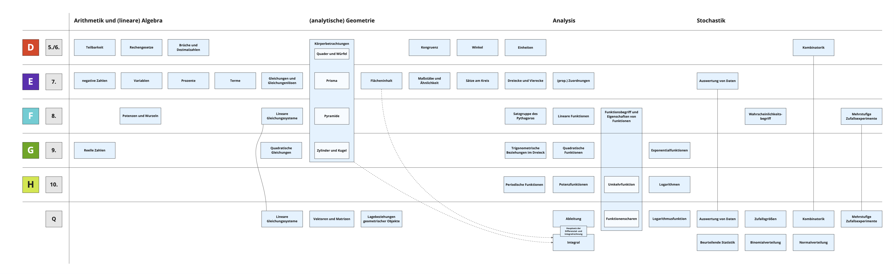

A Sammlung von Lernbereichen
Die folgende Sammlung von Lernbereichen ist im Rahmen des Seminars zur Stoffdidaktik-Veranstaltung entstanden und berücksichtigt die Brandenburger Rahmenlehrpläne für die Klassenstufen 1 – 10 bzw. die gymnasiale Oberstufe (Ministerium für Bildung, Jugend und Sport des Landes Brandenburg, 2022, 2023).
Die Darstellung nach Klassenstufen orientiert sich an den Niveaustufen für den gymnasialen Bildungsgang (vgl. Ministerium für Bildung, Jugend und Sport des Landes Brandenburg, 2023, S. 20).

Abb. A.1: Übersicht zu Lernbereichen
Die Übersicht kann als pdf-Datei heruntergeladen werden.
References
Ministerium für Bildung, Jugend und Sport des Landes Brandenburg (Hrsg.). (2022). Rahmenlehrplan für die gymnasiale Oberstufe. Teil C. Mathematik. https://bildungsserver.berlin-brandenburg.de/fileadmin/bbb/unterricht/rahmenlehrplaene/gymnasiale_oberstufe/curricula/2022/Teil_C_RLP_GOST_2022_Mathematik.pdf
Ministerium für Bildung, Jugend und Sport des Landes Brandenburg (Hrsg.). (2023). Rahmenlehrplan Brandenburg. Teil C, Mathematik, Jahrgangsstufen 1 – 10. https://bildungsserver.berlin-brandenburg.de/fileadmin/bbb/unterricht/rahmenlehrplaene/Rahmenlehrplanprojekt/amtliche_Fassung/getrennt_2023/BB_RLP_2023_Teil_C_Ma_GenF_1.pdf